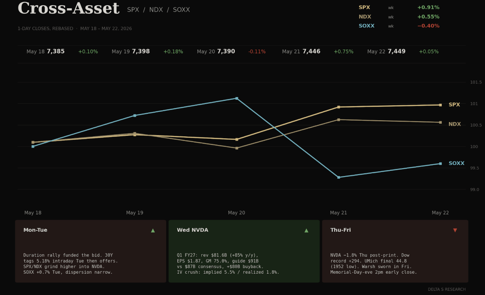
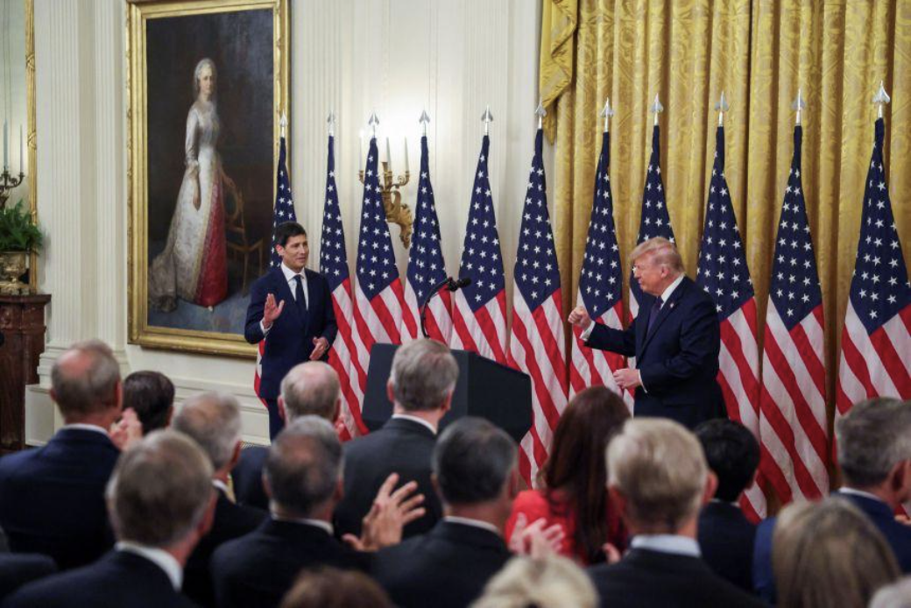
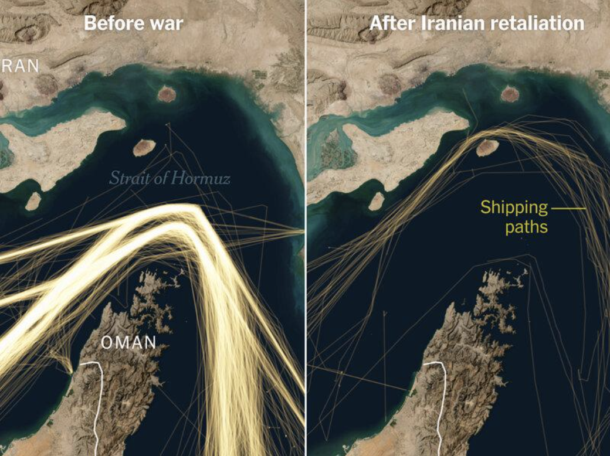

- Equities printed an eighth consecutive weekly gain — the longest streak since 2023. Dow set a fresh closing record Thursday. SPX closed Friday near 7,450.
- The drivers were not earnings or guidance. They were the 30Y rallying back below 5.10%, NVDA delivering a clean print into compressed implieds, and a household sentiment collapse the tape refused to discount.
- VIX closed Friday at 16.74. SKEW remains elevated. The trade is short ATM vol, long the tails. The tape is paying for both.
The Week's Dominant Narrative
- NVDA was the de-facto FOMC. The print landed Wednesday after close. Q1 FY27 revenue $81.6B (+85% y/y), EPS $1.87 (+140%), gross margin 75.0%, and a guide of $91B vs. consensus near $87B. Board authorized an additional $80B buyback and lifted the dividend from $0.01 to $0.25 quarterly.
- The stock closed Thursday –1.8%. Options had priced ~5.5% absolute. Realized was a third of implied. Vol sellers were paid.
- Kevin Warsh was sworn in Friday. The FedWatch curve assigned 0% probability of cuts through 2026 and a non-zero (~3.5%) probability of a hike at the June 17 meeting. Warsh inherits a fragmented committee and a Friday tape that flatly disagrees with his AI-productivity dovish case.
- University of Michigan May sentiment final 44.8 — the lowest reading since the series began in 1952. Year-ahead inflation expectations 4.8%. Long-run 3.9%. The household is breaking. The S&P is not.
- UBS lifted its year-end SPX target to 7,900 from 7,200, citing earnings strength and a view that oil "will not hinder economic expansion". That is the consensus the market is being asked to underwrite.
What Volatility Markets Priced
- VIX 16.74 Friday. 52-week low 13.38, high 35.30. The surface is compressed back to the bottom decile of the post-Iran-war range.
- NVDA implied ~5.5% move, realized 1.8%. Pre-print straddles paid out roughly one-third. The vol crush was the trade.
- CRM weekly straddles priced ±9%. BofA downgraded to underweight Thursday on an "AI structural reset" thesis. Single-name dispersion is being repriced under a calm index surface.
- SKEW remains bid. Realized correlation is low, ATM vol is cheap, OTM puts are not. The market is hedging the tail while selling the body.
- VIX May settle was Tuesday May 19. The expiration cleared into the post-NVDA vol crush. Dealer positioning rolled into June without re-loading downside gamma.
- Friday was a Memorial-Day-eve session with a 2pm ET early close. Thin liquidity into the long weekend amplifies any geopolitical or rates surprise. That is the gap risk we are paid for over the holiday.

Cross Asset Signals
- The 30Y rallied. After tagging 5.18% intraday Tuesday, the long end closed Friday at 5.07%. A ~10bp duration rally was the discount-rate gift that let long-duration tech close the week green into an underwhelming NVDA tape.
- The Dow led, not the Nasdaq. +2.1% vs. +0.5% Nasdaq is the cleanest signal: this was a low-vol, defensive-cyclical rotation, not an AI-beta extension. Records set in industrials and financials, not semis.
- Brent finished the week lower near $105–106 despite Hormuz remaining functionally closed and Iran "Project Freedom" paused. The energy market is selling into geopolitical headlines because demand prints are softening — exactly the mix that lets the long end rally without an inflation panic.
- Gold flat ~$4,500 all week. Real yields stable, dollar slightly softer, no haven bid. Gold is trading like a duration asset, not a crisis asset. The cyclical headwind from rates remains the binding constraint.
- DXY –0.3% on the week. Marginal USD weakness is consistent with the duration rally and the soft sentiment print. Not a regime change.
- Mortgage rates 6.51% — highest since August 2025. The duration rally in the long end is not yet flowing through to the household. The transmission is broken at the consumer.

Structural Fragilities
- Sentiment / tape divergence is at a generational extreme. UMich 44.8 is below every recession trough on record. SPX at 7,450. Either the household is wrong, the earnings consensus is wrong, or the gap closes through a drawdown. History rarely resolves this via sentiment alone.
- The AI bid is reflexive and supply-chain narrow. NVDA "beat-and-raise → sell the news" tells you the marginal buyer is being asked to underwrite ~$91B quarterly revenue runs forever. Each guide reset raises the floor. Each in-line print becomes a sell trigger.
- Iran/Hormuz tail is uncompensated. Brent fell into a still-closed strait. The Persian Gulf Strait Authority is now tolling shipping. OPEC+ added 206K bpd. None of this is in equity vol pricing for next week. A single tanker incident over the long weekend reprices Brent $5–10 and reopens the inflation conversation Warsh just inherited.
- CAPE at 42+, forward P/E at 22+, and the household at a 1952 low. Multiple expansion is doing all the work. Earnings revisions are flattening. The marginal dollar of multiple is being paid for with sentiment risk.
- Salesforce as a canary. When a $250B+ enterprise software name gets cut to underweight on AI-displacement risk and the options market prices ±9%, the dispersion under the index is widening. Index vol is not picking it up. Single-name vol is.
- Warsh communication risk. The Street is openly modeling him as "less predictable, less communicative." First press conference June 17. Any deviation from Powell's playbook is a fresh source of rates vol the surface is not pricing.
Our Trades This Week
The thesis going into the week was the one the surface was telling us: ATM vol compressed, SKEW bid, NVDA implieds pricing ~5.5% into a print the realized vol had no chance of paying out. We sized the book around being short body and structurally long the tails.
- NVDA 215/210 put credit spread, 5/26 expiry. Opened Wednesday 5/21 ahead of the print. Short-vol expression, not directional. We wanted to be paid for the IV crush, not for picking direction. NVDA closed Thursday –1.8% against a ~5.5% implied move. Realized was a third of priced. The spread is sitting on full credit into 5/26 expiry.
- AMD 455/450 put credit spread, 5/22 0-DTE. Pin trade into Friday's early close. AMD held the level. Closed at expiry for full credit. The setup was the same as NVDA: overpriced front-week put skew into a low-realized-vol tape, expressed in a 0-DTE window where the theta math is cleaner than the gamma risk.
- CIFR 5/22 / 6/5 $25 diagonal call. Calendarized short premium against a miner sitting in a tight consolidation range. The front leg expired worthless as intended. The back leg carries the position.
- EOSE 5/21/27 $7 LEAPS call, with 5/29/26 $11 short call overlay. Long-dated directional position on the storage name. The near-dated short call is a tail-funding overlay against decay on the LEAPS. We are paid to be long the structural story and not paying for the next week.
- Closed: LITE and AVGO bull put spreads. Both opened earlier in May as short-vol expressions on names with elevated IV rank into the broader semis bid. Closed this week for full credit as IV bled into the post-NVDA vol crush. Both trades worked because the thesis was vol, not delta. The underlyings did not need to rally for the spreads to print.
Book posture into Tuesday's reopen. Net short ATM vol on NVDA and the AMD trade is off the book. The butterfly is the long-tails leg into the holiday gap. We are not adding new short premium ahead of the three-day weekend with Hormuz still functionally closed and Warsh's first weekend as Chair. VIX 16 does not pay enough to underwrite that gap.
What We Are Watching Next
- June 17 FOMC. Warsh's first press conference. The market is pricing 0% cut probability and 3.5% hike probability. Any dovish lean is asymmetric vol-positive into a compressed surface.
- Tuesday May 26 reopen. Three-day weekend gap risk into Hormuz, a Warsh weekend, and earnings tail (CRM, DELL Thursday May 28). VIX 16 does not price this.
- PCE Friday May 29. First post-CPI/PPI inflation data point on the new chair. Hot PCE confirms the stagflation pricing the bond market priced in last week and re-opens the duration trade in the other direction.
- CRM and DELL Thursday May 28. Two tests of the "AI software displacement vs. AI hardware demand" dispersion trade. CRM options pricing 9% says the buy-side is positioned for a binary outcome.
- Hormuz tanker insurance premia and Persian Gulf Strait Authority toll levels. A widening of either is the canary that the energy compression is reversing.
- June VIX expiration June 17. Same date as the Warsh FOMC. Dealer gamma rolls into a single binary print. Asymmetric setup for long volatility into the event.